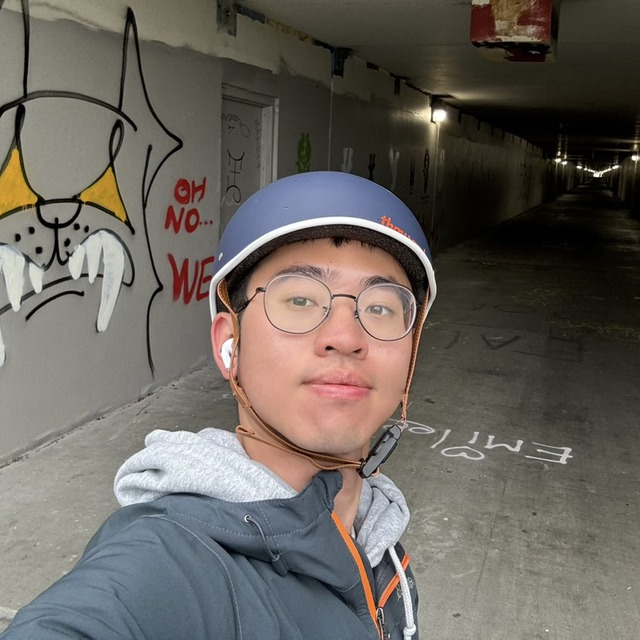
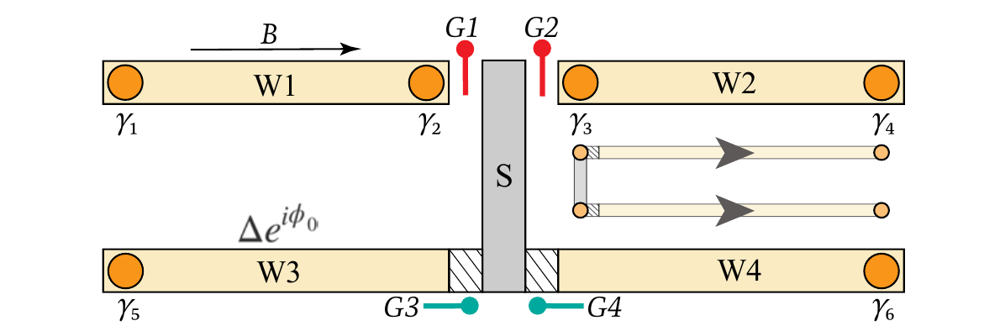
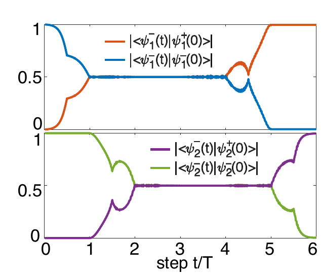
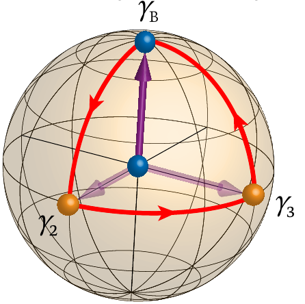
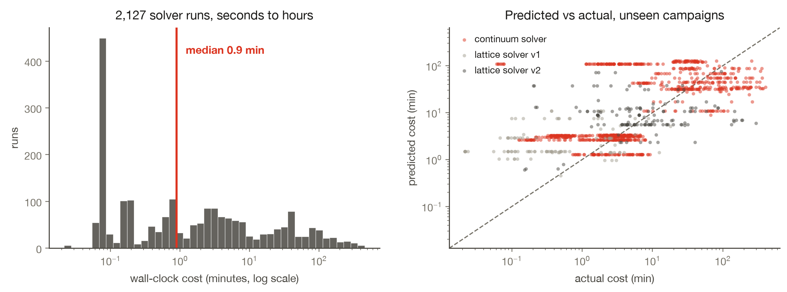
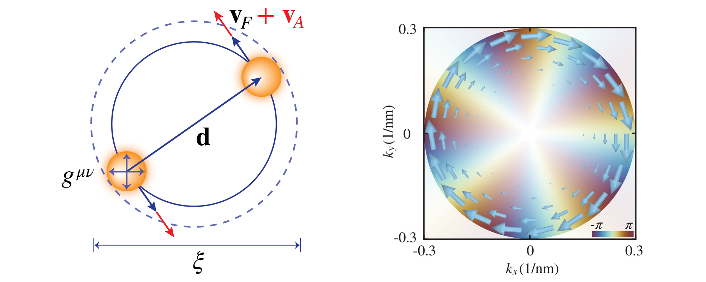
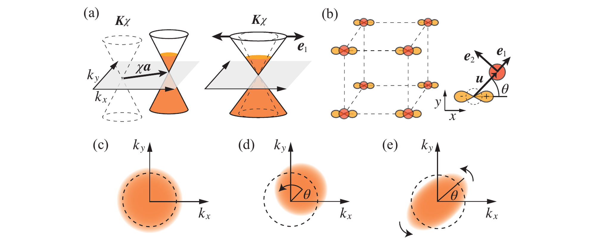

I am a Physics PhD candidate advised by Di Xiao and Ting Cao at the University of Washington, graduating in 2027. Previously, I was a research intern at Los Alamos National Laboratory (2023, 2024) and Lawrence Berkeley National Laboratory (2019).
I build machine-learning and computational models for quantum many-body systems, from transformer neural-network quantum states, to topological quantum computing, to the theory behind magnetism and superconductivity. My research has been recognized by the Thouless Institute for Quantum Matter Graduate Fellowship and Clean Energy Institute Graduate Fellowship.
I enjoy matcha and boba , tennis , and biking around Seattle's lakes.
Projects
Attention-Based Neural Quantum States
A transformer wavefunction that solves the quantum many-body problem, built in JAX, optimized by variational Monte Carlo, benchmarked against exact diagonalization, warm-started from Hartree-Fock, and trained on H200 GPUs.

Braiding Majorana Zero Modes for Topological Qubits
Two theoretical advances toward robust Majorana topological qubits: a geometric-phase protocol that preserves non-Abelian braiding in the presence of trivial Andreev bound states, and a minimal two-wire, single-quantum-dot device with direct electrical readout.



Predicting HPC Walltime Before Launch
2,127 of my own solver runs turned into a DuckDB warehouse, a leakage-aware cost model, and a calibrated walltime policy: 95%-safe requests at 4.6x headroom instead of a measured 17x blanket cushion.

Quantum Geometry of Superconductivity & Phonon Magnetism
Quantum geometry made measurable: three first-author theories on how the shape of electron wavefunctions bounds the size of a Cooper pair and gives phonons in Dirac materials giant magnetic moments.


Talks
-
Quantum Geometric Quadrupole of Cooper Pairs in Flat-Band Superconductors
-
Quantum Geometric Quadrupole of Cooper Pairs Invited seminar
-
Chiral Phonons Poster
-
Gauge and Geometric Origins of Phonon Magnetism in Dirac Materials Invited seminar
-
Geometric Theory of Phonon Magnetic Moment in Dirac Materials
-
Phonon Magnetic Moments in Cd3As2: Theory Guiding the Magneto-Raman Experiment
-
Theory of Giant Phonon Magnetic Moment in Doped Dirac Semimetals
-
Dynamically Driven Orbital Magnetization Beyond the Adiabatic Limit
Publications
-
Nonadiabatic Theory of Phonon Magnetic Moments in Insulators and Metals
-
Quantum Geometric Quadrupole of Cooper Pairs
-
Geometric Origin of Phonon Magnetic Moment in Dirac Materials
-
Adiabatic Pumping of Orbital Magnetization by Spin Precession
-
Gauge theory of giant phonon magnetic moment in doped Dirac semimetals
-
Non-Abelian statistics of Majorana zero modes in the presence of an Andreev bound state
-
Minimal setup for non-Abelian braiding of Majorana zero modes
-
Observation of three-state nematicity in the triangular lattice antiferromagnet Fe1/3NbS2